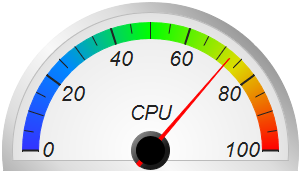
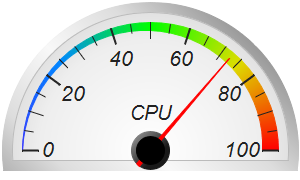
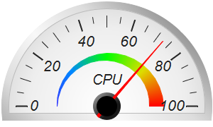
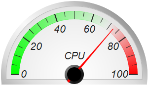
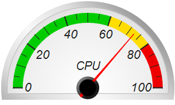
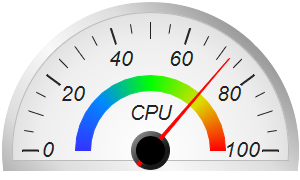

This example demonstrates semicircle meters with a soft white background and a silver border.
The white background in this example is actually a radial gradient. It is fully white at the center, changing to light grey at the border. This creates a "softer" white effect. The radial gradient is created using
AngularMeter.relativeRadialGradient.
The silver border effect is achieved by using
AngularMeter.relativeLinearGradient to create a gradient consisting of varying levels of grey.
The soft white gradient and the silver gradient are applied to the meter background and border using
AngularMeter.addScaleBackground.
Because the background and border color are similar, to make the border easier to distinguish from the background, the
AngularMeter.addScaleBackground is called one more time to add a 1-pixel grey boundary between the border and the background.
The following is the command line version of the code in "cppdemo/whitesemicirclemeter". The MFC version of the code is in "mfcdemo/mfcdemo". The Qt Widgets version of the code is in "qtdemo/qtdemo". The QML/Qt Quick version of the code is in "qmldemo/qmldemo".
#include "chartdir.h"
void createChart(int chartIndex, const char *filename)
{
// The value to display on the meter
double value = 72.55;
// Create an AngularMeter object of size 300 x 180 pixels with transparent background
AngularMeter* m = new AngularMeter(300, 180, Chart::Transparent);
// Set the default text and line colors to very dark grey (0x222222)
m->setColor(Chart::TextColor, 0x222222);
m->setColor(Chart::LineColor, 0x222222);
// Center at (150, 150), scale radius = 128 pixels, scale angle -90 to +90 degrees
m->setMeter(150, 150, 128, -90, 90);
// Gradient color for the border to make it silver-like
double ringGradient[] = {1, 0x999999, 0.5, 0xdddddd, 0, 0xf8f8f8, -0.5, 0xdddddd, -1, 0x999999};
const int ringGradient_size = (int)(sizeof(ringGradient)/sizeof(*ringGradient));
// Background gradient color from white (0xffffff) at the center to light grey (0xdddddd) at the
// border
double bgGradient[] = {0, 0xffffff, 0.75, 0xeeeeee, 1, 0xdddddd};
const int bgGradient_size = (int)(sizeof(bgGradient)/sizeof(*bgGradient));
// Add a scale background of 148 pixels radius using the gradient background, with a 10 pixel
// thick silver border
m->addScaleBackground(148, m->relativeRadialGradient(DoubleArray(bgGradient, bgGradient_size),
148), 10, m->relativeLinearGradient(DoubleArray(ringGradient, ringGradient_size), 45, 148));
// Add a 1 pixel light grey (0xbbbbbb) line at the inner edge of the thick silver border (radius
// = 138) to enhance its contrast with the background gradient
m->addScaleBackground(138, Chart::Transparent, 1, 0xbbbbbb);
// Meter scale is 0 - 100, with major tick every 20 units, minor tick every 10 units, and micro
// tick every 5 units
m->setScale(0, 100, 20, 10, 5);
// Set the scale label style to 15pt Arial Italic. Set the major/minor/micro tick lengths to
// 16/16/10 pixels pointing inwards, and their widths to 2/1/1 pixels.
m->setLabelStyle("Arial Italic", 16);
m->setTickLength(-16, -16, -10);
m->setLineWidth(0, 2, 1, 1);
// Demostrate different types of color scales and putting them at different positions
double smoothColorScale[] = {0, 0x3333ff, 25, 0x0088ff, 50, 0x00ff00, 75, 0xdddd00, 100,
0xff0000};
const int smoothColorScale_size = (int)(sizeof(smoothColorScale)/sizeof(*smoothColorScale));
double stepColorScale[] = {0, 0x00cc00, 60, 0xffdd00, 80, 0xee0000, 100};
const int stepColorScale_size = (int)(sizeof(stepColorScale)/sizeof(*stepColorScale));
double highLowColorScale[] = {0, 0x00ff00, 70, Chart::Transparent, 100, 0xff0000};
const int highLowColorScale_size = (int)(sizeof(highLowColorScale)/sizeof(*highLowColorScale));
if (chartIndex == 0) {
// Add the smooth color scale at the default position
m->addColorScale(DoubleArray(smoothColorScale, smoothColorScale_size));
} else if (chartIndex == 1) {
// Add the smooth color scale starting at radius 128 with zero width and ending at radius
// 128 with 16 pixels inner width
m->addColorScale(DoubleArray(smoothColorScale, smoothColorScale_size), 128, 0, 128, -16);
} else if (chartIndex == 2) {
// Add the smooth color scale starting at radius 70 with zero width and ending at radius 60
// with 20 pixels outer width
m->addColorScale(DoubleArray(smoothColorScale, smoothColorScale_size), 70, 0, 60, 20);
} else if (chartIndex == 3) {
// Add the high/low color scale at the default position
m->addColorScale(DoubleArray(highLowColorScale, highLowColorScale_size));
} else if (chartIndex == 4) {
// Add the step color scale at the default position
m->addColorScale(DoubleArray(stepColorScale, stepColorScale_size));
} else {
// Add the smooth color scale at radius 60 with 15 pixels outer width
m->addColorScale(DoubleArray(smoothColorScale, smoothColorScale_size), 60, 15);
}
// Add a text label centered at (150, 125) with 15pt Arial Italic font
m->addText(150, 125, "CPU", "Arial Italic", 15, Chart::TextColor, Chart::BottomCenter);
// Add a red (0xff0000) pointer at the specified value
m->addPointer2(value, 0xff0000);
// Output the chart
m->makeChart(filename);
//free up resources
delete m;
}
int main(int argc, char *argv[])
{
createChart(0, "whitesemicirclemeter0.png");
createChart(1, "whitesemicirclemeter1.png");
createChart(2, "whitesemicirclemeter2.png");
createChart(3, "whitesemicirclemeter3.png");
createChart(4, "whitesemicirclemeter4.png");
createChart(5, "whitesemicirclemeter5.png");
return 0;
}
© 2023 Advanced Software Engineering Limited. All rights reserved.